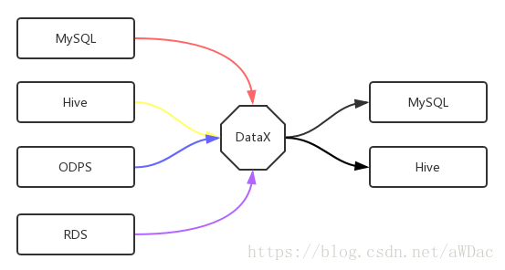

<!DOCTYPE html><html lang="zh-CN"><head>
  <meta charset="UTF-8">
  <link rel="apple-touch-icon" sizes="76x76" href="/img/favicon.png">
  <link rel="icon" type="image/png" href="/img/favicon.png">
  <meta name="viewport" content="width=device-width, initial-scale=1.0, maximum-scale=1.0, user-scalable=no, shrink-to-fit=no">
  <meta http-equiv="x-ua-compatible" content="ie=edge">
  
  <meta name="theme-color" content="#2f4154">
  <meta name="description" content="">
  <meta name="author" content="xinshiyou">
  <meta name="keywords" content="">
  <title>Alibaba-DataX调研使用 - 星空捞月：找寻心中的安宁</title>

  


  
  

  
    
  

  


<!-- 主题依赖的图标库，不要自行修改 -->


<!-- 自定义样式保持在最底部 -->


  
<meta name="generator" content="Hexo 4.2.1"><link rel="alternate" href="/atom.xml" title="星空捞月：找寻心中的安宁" type="application/atom+xml">
<script>function loadCss(l){var d=document,h=d.head,s=d.createElement('link');s.rel='stylesheet';s.href=l;!function e(f){if (d.body)return f();setTimeout(function(){e(f)})}(function(){h.appendChild(s);});}loadCss('/style.css');loadCss('https://cdn.staticfile.org/twitter-bootstrap/4.4.1/css/bootstrap.min.css');loadCss('https://cdn.staticfile.org/github-markdown-css/4.0.0/github-markdown.min.css');loadCss('https://cdn.staticfile.org/highlight.js/10.0.0/styles/tomorrow-night-blue.min.css');loadCss('//at.alicdn.com/t/font_1749284_yg9cfy8wd6.css');loadCss('//at.alicdn.com/t/font_1736178_pjno9b9zyxs.css');loadCss('https://cdn.staticfile.org/fancybox/3.5.7/jquery.fancybox.min.css');</script><noscript><link rel="stylesheet" href="/style.css"><link rel="stylesheet" href="https://cdn.staticfile.org/twitter-bootstrap/4.4.1/css/bootstrap.min.css"><link rel="stylesheet" href="https://cdn.staticfile.org/github-markdown-css/4.0.0/github-markdown.min.css"><link rel="stylesheet" href="https://cdn.staticfile.org/highlight.js/10.0.0/styles/tomorrow-night-blue.min.css"><link rel="stylesheet" href="//at.alicdn.com/t/font_1749284_yg9cfy8wd6.css"><link rel="stylesheet" href="//at.alicdn.com/t/font_1736178_pjno9b9zyxs.css"><link rel="stylesheet" href="https://cdn.staticfile.org/fancybox/3.5.7/jquery.fancybox.min.css"></noscript></head>


<body>
  <header style="height: 70vh;">
    <nav id="navbar" class="navbar fixed-top  navbar-expand-lg navbar-dark scrolling-navbar">
  <div class="container">
    <a class="navbar-brand" href="/">&nbsp;<strong>星空捞月：找寻心中的安宁</strong>&nbsp;</a>

    <button id="navbar-toggler-btn" class="navbar-toggler" type="button" data-toggle="collapse" data-target="#navbarSupportedContent" aria-controls="navbarSupportedContent" aria-expanded="false" aria-label="Toggle navigation">
      <div class="animated-icon"><span></span><span></span><span></span></div>
    </button>

    <!-- Collapsible content -->
    <div class="collapse navbar-collapse" id="navbarSupportedContent">
      <ul class="navbar-nav ml-auto text-center">
        
          
          
          
          
            <li class="nav-item">
              <a class="nav-link" href="/">
                <i class="iconfont icon-home-fill"></i>
                首页
              </a>
            </li>
          
        
          
          
          
          
            <li class="nav-item">
              <a class="nav-link" href="/archives/">
                <i class="iconfont icon-archive-fill"></i>
                归档
              </a>
            </li>
          
        
          
          
          
          
            <li class="nav-item">
              <a class="nav-link" href="/categories/">
                <i class="iconfont icon-category-fill"></i>
                分类
              </a>
            </li>
          
        
          
          
          
          
            <li class="nav-item">
              <a class="nav-link" href="/tags/">
                <i class="iconfont icon-tags-fill"></i>
                标签
              </a>
            </li>
          
        
          
          
          
          
            <li class="nav-item">
              <a class="nav-link" href="/about/">
                <i class="iconfont icon-user-fill"></i>
                关于
              </a>
            </li>
          
        
        
          <li class="nav-item" id="search-btn">
            <a class="nav-link" data-toggle="modal" data-target="#modalSearch">&nbsp;&nbsp;<i class="iconfont icon-search"></i>&nbsp;&nbsp;</a>
          </li>
        
      </ul>
    </div>
  </div>
</nav>

    <div class="view intro-2" id="background" parallax="true" style="background: url('/img/top.jpeg') no-repeat center center;
           background-size: cover;">
      <div class="full-bg-img">
        <div class="mask flex-center" style="background-color: rgba(0, 0, 0, 0.3)">
          <div class="container text-center white-text fadeInUp">
            <span class="h2" id="subtitle">
              
            </span>

            
              
  <div class="mt-3 post-meta">
    <i class="iconfont icon-date-fill" aria-hidden="true"></i>
    <time datetime="2018-06-29 16:52">
      2018年6月29日 下午
    </time>
  </div>


<div class="mt-1">
  
    
    <span class="post-meta mr-2">
      <i class="iconfont icon-chart"></i>
      1.5k 字
    </span>
  

  
    
    <span class="post-meta mr-2">
      <i class="iconfont icon-clock-fill"></i>
      
      
      17
       分钟
    </span>
  

  
  
</div>

            
          </div>

          
        </div>
      </div>
    </div>
  </header>

  <main>
    
      

<div class="container-fluid">
  <div class="row">
    <div class="d-none d-lg-block col-lg-2"></div>
    <div class="col-lg-8 nopadding-md">
      <div class="container nopadding-md" id="board-ctn">
        <div class="py-5" id="board">
          <div class="post-content mx-auto" id="post">
            
            <article class="markdown-body">
              <p>  接触DataX是基于公司离线数据同步需求，从而开始接触到DataX的使用。前异构数据之间开源同步工具，主要有</p>
<a id="more"></a>

<h2 id="同步工具调研"><a href="#同步工具调研" class="headerlink" title="同步工具调研"></a>同步工具调研</h2><ol>
<li><p>Sqoop<br>  Sqoop是一款开源的工具，主要用于Hadoop与传统RDBMS之间的数据同步，可以将RDBMS中的数据同步到HDFS中，也可以进行逆向操作。主要是基于MR任务的进行同步，具有支持并发、增量更新、支持海量数据同步等优点。<br>  <a href="https://github.com/cloudera/sqoop/wiki" target="_blank" rel="noopener">Sqoop Wiki</a><br>  <a href="https://github.com/cloudera/sqoop/wiki" target="_blank" rel="noopener">Sqoop官网</a></p>
</li>
<li><p>OGG<br>  Oracle Golden Gate，缩写为OGG，可见其是Oralce“冠名”的同步工具。主要是RDBMS之间的数据同步，常见的关系型数据，例如Oracle/DB2/Sybase/MySQL/MsSQL等均支持。<br>  <a href="http://www.oracle.com/technetwork/cn/middleware/goldengate/overview/index.html" target="_blank" rel="noopener">OGG介绍</a></p>
</li>
<li><p>Kettle<br>  Kettle是一款开源的ETL工具，具有集群模式。Kettle主要用来做ETL数据处理，具有方便快捷、可视化等优点，适合于一般中小业务的使用。</p>
</li>
<li><p>DataX<br>  DataX是由Alibaba开源的一款异构数据同步工具，可以在常见的各种数据源之间进行同步，并仅依赖Java环境，具有轻量、插件式、方便等优点，可以快速完成同步任务。一般公司的数据同步任务，基本可以满足。</p>
</li>
<li><p>canal+otter<br>  canal+otter数据同步方案，同样是Alibaba开源的同步工具。该方案适用于大规模、扩机房、跨区域等重量级数据同步任务，并具有监控、近实时同步等优点。</p>
</li>
<li><p>SymmetricDS<br>  同样是一款基于Java开发的分布式开源同步软件，基于复制原理，源于Java的特性，SymmetricDS具有跨平台、多线程、可监控等优点。</p>
</li>
</ol>
<p>  博主公司具有实时同步数据与离线同步数据的需求，因此需要调研数据同步工具。其中实时同步主要是从MySQL同步数据到Hive，这里我们选择的是MySQL Binlog方式进行实时同步；离线同步，主要是从各种数据源–如MySQL、ODPS、HIVE等–之间的数据同步。</p>
<p>  经过调研发现，DataX具有以下优点</p>
<ol>
<li>社区活跃，虽然Alibaba没有开源集群模式，仍有许多用户群体；</li>
<li>Alibaba出品，有大公司维护；</li>
<li>使用方便，只需要配置JSON即可使用;无需安装，直接解压即可使用；</li>
<li>完善的文档，很快可以上手，学习成本近乎于零。</li>
</ol>
<h2 id="DataX介绍"><a href="#DataX介绍" class="headerlink" title="DataX介绍"></a>DataX介绍</h2><p>  <em>DataX</em>是Alibaba推出的异构数据通过方案，通过插件式组合，可以完成不同数据源之间的数据同步任务。DataX可以通过的数据包括目前所见的绝大数，包括关系型数据库[MySQL、Oracle、SQLServer、PostgreSQL等]、阿里云数据仓数据存储[ODPS、ADS、OSS、OCS等]、NoSQL数据库[OTS、Hbase、MongoDB、Hive等]、无结构化数据[TextFile、FTP、HDFS、ES等]。另外DataX提供了方便的扩展实现，可以方便的个性化定制自己的数据源，方便扩展。</p>
<p>  目前开源出来的DataX已经发布了3.0版本，增加了许多新的特性，包括</p>
<ol>
<li>可靠地数据质量监控</li>
<li>丰富的数据转换功能</li>
<li>精准的速度控制</li>
<li>强劲的同步性能</li>
<li>健壮的容错机制</li>
<li>极简的使用体验</li>
</ol>
<p>  更加详细的介绍，可以参考DataX的官方说明：<br>  <a href="https://github.com/alibaba/DataX/blob/master/userGuid.md" target="_blank" rel="noopener">User Guide</a><br>  <a href="https://github.com/alibaba/DataX/blob/master/introduction.md" target="_blank" rel="noopener">DataX-Introduction</a><br>  <a href="https://github.com/alibaba/DataX/blob/master/dataxPluginDev.md" target="_blank" rel="noopener">插件开发宝典</a></p>
<h2 id="目前使用场景"><a href="#目前使用场景" class="headerlink" title="目前使用场景"></a>目前使用场景</h2><p>  目前我们使用到的场景如下所示<br><br>  同步的路径为：</p>
<ol>
<li>MySQL-&gt;Hive</li>
<li>Hive-&gt;MySQL</li>
<li>ODPS-&gt;Hive</li>
<li>ODPS-&gt;MySQL</li>
<li>RDS-&gt;Hive<br>  选择DataX还有一个重要的特性就是，DataX是Alibaba提供的数据同步方案，天然的支持阿里云的数据源，不需要我们重新从API开始开发，节省开发成本。</li>
</ol>
<h2 id="使用体会"><a href="#使用体会" class="headerlink" title="使用体会"></a>使用体会</h2><p>  在使用DataX的过程中，总体而言遇到的问题较少。目前DataX的主要缺点在于开源出来的DataX，缺少分布式支持，是单机版本，无法充分发挥集群的里面。因此，会存在单机节点存在的各种问题，内存、CPU、网络等问题。</p>
<p>使用一段时间，有一些思考</p>
<ol>
<li>DataX集群模式的实现方式，如何实现？如果集群之后，如何监控？</li>
<li>DataX单节点状态时，任务运行性能参数的收集。DataX提供了Hook，可以回调打印一些参数，另外可以加入最后打印的数据，例如<figure class="highlight reasonml"><table><tbody><tr><td class="code"><pre class=" language-hljs reasonml">Map&lt;String, Number&gt; preLogStatics = communication.get<span class="hljs-constructor">Counter()</span>;<br>preLogStatics.put(<span class="hljs-string">"任务启动时刻"</span>, startTimeStamp);<br>preLogStatics.put(<span class="hljs-string">"任务结束时刻"</span>, endTimeStamp);<br>preLogStatics.put(<span class="hljs-string">"任务总计耗时"</span>, totalCosts);<br>preLogStatics.put(<span class="hljs-string">"任务平均流量"</span>, byteSpeedPerSecond);<br>preLogStatics.put(<span class="hljs-string">"记录写入速度"</span>, recordSpeedPerSecond);<br>preLogStatics.put(<span class="hljs-string">"读出记录总数"</span>, <span class="hljs-module-access"><span class="hljs-module"><span class="hljs-identifier">CommunicationTool</span>.</span></span>get<span class="hljs-constructor">TotalReadRecords(<span class="hljs-params">communication</span>)</span>);<br>preLogStatics.put(<span class="hljs-string">"读写失败总数"</span>, <span class="hljs-module-access"><span class="hljs-module"><span class="hljs-identifier">CommunicationTool</span>.</span></span>get<span class="hljs-constructor">TotalErrorRecords(<span class="hljs-params">communication</span>)</span>);<br>		<br>HookInvoker invoker = <span class="hljs-keyword">new</span> <span class="hljs-constructor">HookInvoker(CoreConstant.DATAX_HOME + <span class="hljs-string">"/hook"</span>, <span class="hljs-params">configuration</span>, <span class="hljs-params"><code class="language-hljs reasonml">Map&lt;String, Number&gt; preLogStatics = communication.get<span class="hljs-constructor">Counter()</span>;<br>preLogStatics.put(<span class="hljs-string">"任务启动时刻"</span>, startTimeStamp);<br>preLogStatics.put(<span class="hljs-string">"任务结束时刻"</span>, endTimeStamp);<br>preLogStatics.put(<span class="hljs-string">"任务总计耗时"</span>, totalCosts);<br>preLogStatics.put(<span class="hljs-string">"任务平均流量"</span>, byteSpeedPerSecond);<br>preLogStatics.put(<span class="hljs-string">"记录写入速度"</span>, recordSpeedPerSecond);<br>preLogStatics.put(<span class="hljs-string">"读出记录总数"</span>, <span class="hljs-module-access"><span class="hljs-module"><span class="hljs-identifier">CommunicationTool</span>.</span></span>get<span class="hljs-constructor">TotalReadRecords(<span class="hljs-params">communication</span>)</span>);<br>preLogStatics.put(<span class="hljs-string">"读写失败总数"</span>, <span class="hljs-module-access"><span class="hljs-module"><span class="hljs-identifier">CommunicationTool</span>.</span></span>get<span class="hljs-constructor">TotalErrorRecords(<span class="hljs-params">communication</span>)</span>);<br>		<br>HookInvoker invoker = <span class="hljs-keyword">new</span> <span class="hljs-constructor">HookInvoker(CoreConstant.DATAX_HOME + <span class="hljs-string">"/hook"</span>, <span class="hljs-params">configuration</span>, <span class="hljs-params">preLogStatics</span>)</span>;<br></code></span></span></pre></td></tr></tbody></table></figure>
  这样我们收集到更多的运行参数，方便后期对任务的运行作分析，便于改进优化任务的运行参数。</li>
<li>DataX.py本质上运行的是Java程序，如果直接调用Engine.entry，如何统计任务运行日志？是否存在一种方式，可以按照线程打印单独一个文件的日志？</li>
</ol>
<h1 id="参考文章"><a href="#参考文章" class="headerlink" title="参考文章"></a>参考文章</h1><ol>
<li><a href="https://github.com/alibaba/DataX" target="_blank" rel="noopener">https://github.com/alibaba/DataX</a></li>
<li><a href="https://blog.csdn.net/gamer_gyt/article/details/55225700" target="_blank" rel="noopener">https://blog.csdn.net/gamer_gyt/article/details/55225700</a></li>
<li><a href="https://www.cnblogs.com/qiumingcheng/p/5435907.html" target="_blank" rel="noopener">https://www.cnblogs.com/qiumingcheng/p/5435907.html</a></li>
<li><a href="https://www.cnblogs.com/majinju/p/5739820.html" target="_blank" rel="noopener">https://www.cnblogs.com/majinju/p/5739820.html</a></li>
<li><a href="http://www.oracle.com/technetwork/cn/middleware/goldengate/overview/index.html" target="_blank" rel="noopener">http://www.oracle.com/technetwork/cn/middleware/goldengate/overview/index.html</a></li>
</ol>

            </article>
            <hr>
            <div>
              <div class="post-metas mb-3">
                
                  <div class="post-meta mr-3">
                    <i class="iconfont icon-category"></i>
                    
                      <a class="hover-with-bg" href="/categories/%E5%A4%A7%E6%95%B0%E6%8D%AE/">大数据</a>
                    
                  </div>
                
                
                  <div class="post-meta">
                    <i class="iconfont icon-tags"></i>
                    
                      <a class="hover-with-bg" href="/tags/DataX/">DataX</a>
                    
                      <a class="hover-with-bg" href="/tags/%E8%B0%83%E7%A0%94/">调研</a>
                    
                  </div>
                
              </div>
              
                <p class="note note-warning">本博客所有文章除特别声明外，均采用 <a href="https://creativecommons.org/licenses/by-sa/4.0/deed.zh" target="_blank" rel="nofollow noopener noopener">CC BY-SA 4.0 协议</a> ，转载请注明出处！</p>
              
              
                <div class="post-prevnext row">
                  <div class="post-prev col-6">
                    
                    
                      <a href="/2018/06/29/%E5%AE%89%E8%A3%85Chrome-Headless%E9%81%87%E5%88%B0%E7%9A%84%E9%97%AE%E9%A2%98/">
                        <i class="iconfont icon-arrowleft"></i>
                        <span class="hidden-mobile">安装Chrome-Headless遇到的问题</span>
                        <span class="visible-mobile">上一篇</span>
                      </a>
                    
                  </div>
                  <div class="post-next col-6">
                    
                    
                  </div>
                </div>
              
            </div>

            
          </div>
        </div>
      </div>
    </div>
    
      <div class="d-none d-lg-block col-lg-2 toc-container" id="toc-ctn">
        <div id="toc">
  <p class="toc-header"><i class="iconfont icon-list"></i>&nbsp;目录</p>
  <div id="tocbot"></div>
</div>

      </div>
    
  </div>
</div>

<!-- Custom -->


    
  </main>

  
    <a id="scroll-top-button" href="#" role="button">
      <i class="iconfont icon-arrowup" aria-hidden="true"></i>
    </a>
  

  
    <div class="modal fade" id="modalSearch" tabindex="-1" role="dialog" aria-labelledby="ModalLabel" aria-hidden="true">
  <div class="modal-dialog modal-dialog-scrollable modal-lg" role="document">
    <div class="modal-content">
      <div class="modal-header text-center">
        <h4 class="modal-title w-100 font-weight-bold">搜索</h4>
        <button type="button" id="local-search-close" class="close" data-dismiss="modal" aria-label="Close">
          <span aria-hidden="true">×</span>
        </button>
      </div>
      <div class="modal-body mx-3">
        <div class="md-form mb-5">
          <input type="text" id="local-search-input" class="form-control validate">
          <label data-error="x" data-success="v" for="local-search-input">关键词</label>
        </div>
        <div class="list-group" id="local-search-result"></div>
      </div>
    </div>
  </div>
</div>
  

  

  

  <footer class="mt-5">
  <div class="text-center py-3">
    <div>
      <a href="https://hexo.io" target="_blank" rel="nofollow noopener"><span>Hexo</span></a>
      <i class="iconfont icon-love"></i>
      <a href="https://github.com/fluid-dev/hexo-theme-fluid" target="_blank" rel="nofollow noopener">
        <span>Fluid</span></a>
    </div>
    

    

    
  </div>
</footer>

<!-- SCRIPTS -->
<script src="https://cdn.staticfile.org/jquery/3.4.1/jquery.min.js"></script>
<script src="https://cdn.staticfile.org/twitter-bootstrap/4.4.1/js/bootstrap.min.js"></script>


<!-- Plugins -->


  
    
  


  <script src="https://cdn.staticfile.org/tocbot/4.11.1/tocbot.min.js"></script>
  


  <script src="https://cdn.staticfile.org/typed.js/2.0.11/typed.min.js"></script>
  


  <script src="https://cdn.staticfile.org/anchor-js/4.2.2/anchor.min.js"></script>
  


  
  


  <script src="https://cdn.staticfile.org/fancybox/3.5.7/jquery.fancybox.min.js"></script>
  

  


<script src="/bundle.js"></script><script>
    $(document).ready(function () {
      var boardCtn = $('#board-ctn');
      var boardTop = boardCtn.offset().top;

      tocbot.init({
        tocSelector: '#tocbot',
        contentSelector: 'article.markdown-body',
        headingSelector: 'h1,h2,h3,h4,h5,h6',
        linkClass: 'tocbot-link',
        activeLinkClass: 'tocbot-active-link',
        listClass: 'tocbot-list',
        isCollapsedClass: 'tocbot-is-collapsed',
        collapsibleClass: 'tocbot-is-collapsible',
        collapseDepth: 0,
        scrollSmooth: true,
        headingsOffset: -boardTop
      });
      if ($('.toc-list-item').length > 0) {
        $('#toc').css('visibility', 'visible');
      }
    });
  ;

    var typed = new Typed('#subtitle', {
      strings: [
        '  ',
        "Alibaba-DataX调研使用&nbsp;",
      ],
      cursorChar: "_",
      typeSpeed: 70,
      loop: false,
    });
    typed.stop();
    $(document).ready(function () {
      $(".typed-cursor").addClass("h2");
      typed.start();
    });
  ;

    anchors.options = {
      placement: "right",
      visible: "hover",
      
    };
    var el = "h1,h2,h3,h4,h5,h6".split(",");
    var res = [];
    for (item of el) {
      res.push(".markdown-body > " + item)
    }
    anchors.add(res.join(", "))
  ;

    var path = "/local-search.xml";
    var inputArea = document.querySelector("#local-search-input");
    inputArea.onclick = function () {
      searchFunc(path, 'local-search-input', 'local-search-result');
      this.onclick = null
    }
  ;

    $('#post img:not(.no-zoom img, img[no-zoom]), img[zoom]').each(
      function () {
        var element = document.createElement('a');
        $(element).attr('data-fancybox', 'images');
        $(element).attr('href', $(this).attr('src'));
        $(this).wrap(element);
      }
    );
  </script></body></html>